Phase 1: Build and observe
Make it work, then watch it work.
Network and IP check
All four
What we did
Before anything else every Mac proves it is on the same campus Wi-Fi subnet (10.7.0.0/19) and can reach the router.
Commands
./scripts/my_ip.sh
What the evidence shows
- Each Mac prints its IPv4 address, netmask 255.255.224.0, gateway 10.7.0.1 and a router ping with 0% loss.
- The campus DHCP server had changed all four IPs, so the team re-ran setup_team.sh and pushed the new team.env (Mohan 10.7.9.43, Narendra 10.7.7.27, Keshav 10.7.29.229, Mayank 10.7.25.176).
- Mohan's first run shows a red WARNING: DNS 127.0.2.2 means Cloudflare WARP was ON and would ignore our DNS server. He switched it off (second run, DNS no longer 127.x).
Why it works: DNS, TCP and TLS only work if the IP layer works. Every script also refuses to run if the Mac's IP is not the one in team.env, which stops silent mistakes.


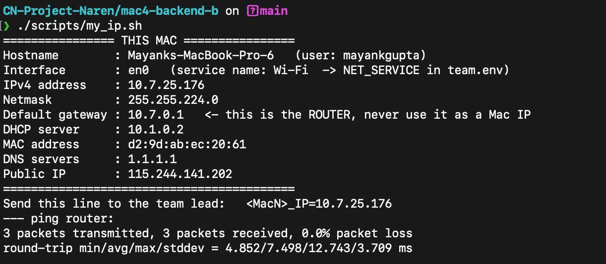
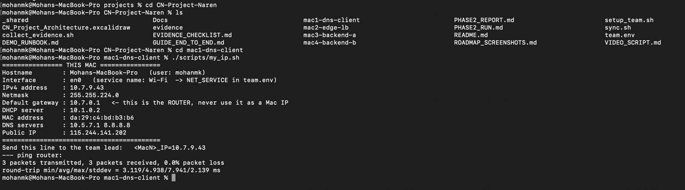
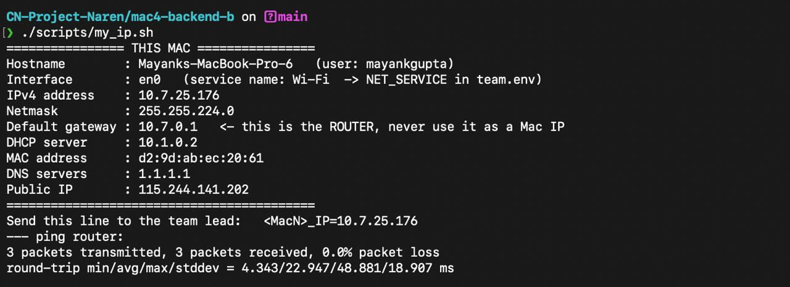
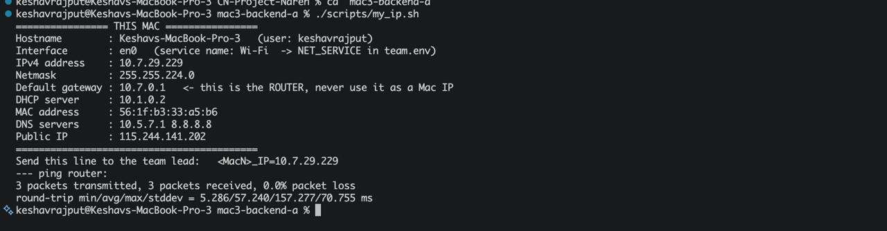
Our own DNS server
Mohan (Mac 1)
What we did
dnsmasq on Mac 1 answers app.team1.test and api.team1.test with the edge's IP. This is our own mini 'Route 53'.
Commands
./scripts/setup_dnsmasq.sh primary
What the evidence shows
- dnsmasq: syntax check OK, started, listening on UDP 10.7.9.43:53 and 127.0.0.1:53.
- Self-test: dig app.team1.test @10.7.9.43 returns A record 10.7.7.27 (the edge).
Why it works: DNS only turns a name into an IP. It never connects to anything. Clients then open TCP and TLS to that IP.
Queried live from Mac 2 against Mohan's dnsmasq (25 Nov 11:36), proving it serves other Macs too
# captured 2026-11-25 11:36:02 on Mac 2 (10.7.7.27) $ dig app.team1.test @$MAC1_IP +noall +answer; dig +short api.team1.test @$MAC1_IP ; <<>> DiG 9.10.6 <<>> app.team1.test @10.7.9.43 +noall +answer ;; global options: +cmd app.team1.test. 0 IN A 10.7.7.27 10.7.7.27
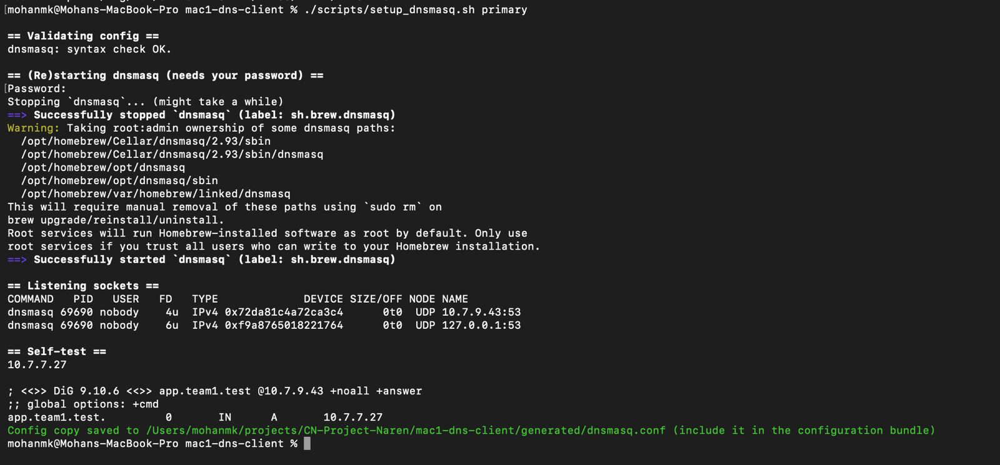
Edge server and private CA
Narendra (Mac 2)
What we did
nginx on Mac 2 terminates HTTPS on port 8443 and load-balances to the two backends. A small server hands out the team CA certificate.
Commands
./scripts/configure_nginx.sh ./scripts/serve_ca.sh
What the evidence shows
- nginx -t successful, nginx listening on *:8443.
- serve_ca.sh served http://10.7.7.27:8000/ca.crt; the access lines show all three teammates downloaded it (10.7.9.43, 10.7.25.176, 10.7.29.229).
Why it works: The certificate contains names (SAN) not IPs, so it stays valid even when DHCP changes an IP. Only the public CA is served, private keys never leave Mac 2.

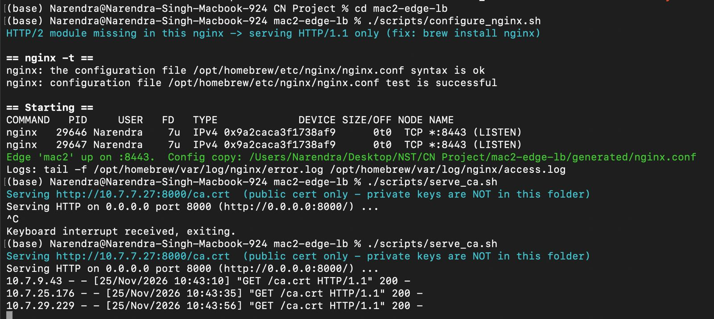
Clients trust the CA and use our DNS
Mohan, Keshav, Mayank
What we did
Each client downloads the team CA, installs it as trusted and points its resolver to Mac 1.
Commands
./scripts/trust_ca.sh && ./scripts/set_dns.sh primary
What the evidence shows
- All three print the SAME fingerprint sha256 62:F0:8C:C0:78:C5:16:67:...:2B:31:D9, so everyone trusts the same CA.
- networksetup now lists nameserver 10.7.9.43 on every client. Mayank's old manual DNS (1.1.1.1) and Keshav's empty setting were saved first and can be restored with set_dns.sh restore.
Why it works: This meets the 'at least two clients resolve through our DNS' requirement (we have three). It is also why curl works without -k.

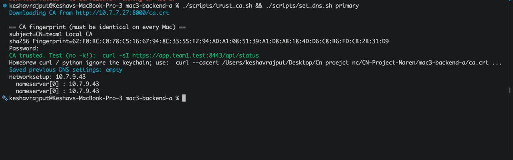
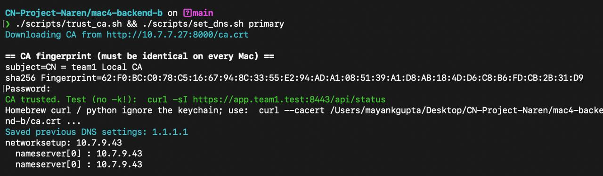
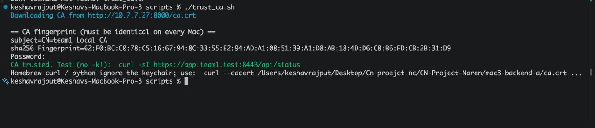


Layer-by-layer check: diagnose.sh
Mohan
What we did
One script checks IP, DNS, TCP, TLS, HTTP and the backends in that order. The first FAIL is the real problem.
Commands
./scripts/diagnose.sh
What the evidence shows
- First run: everything PASS except TLS: 'Verify return code: 21 (unable to verify the first certificate)'.
- But the HTTP check right below it returned 200 without -k, so the certificate really was trusted. The script was wrong, not the setup.
- Cause: the Mac's built-in openssl (LibreSSL) does not read the macOS keychain where trust_ca.sh put the CA. Fix: give openssl the CA file with -CAfile.
- After the fix every layer is PASS, including 'certificate verifies'.
Why it works: A great viva story: a false alarm found by reading the layers in order, and a fix that took one line.
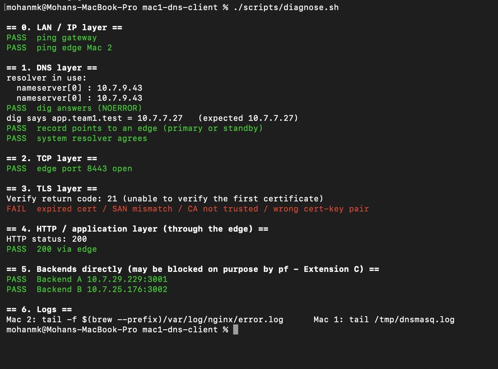
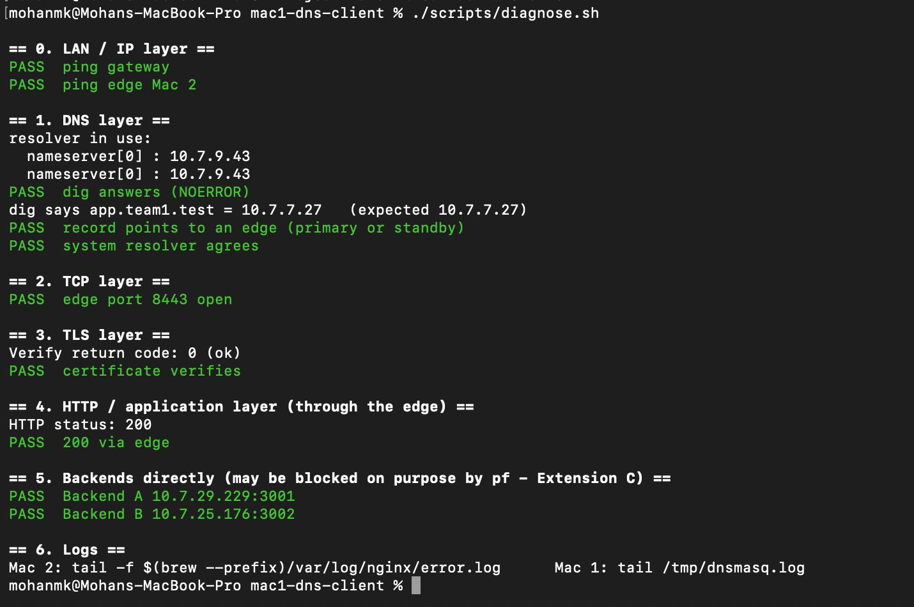
Load balancing
Mohan
What we did
Six HTTPS requests to https://app.team1.test:8443/api/status without -k. The X-Backend header tells which backend answered.
Commands
./scripts/demo_lb.sh
What the evidence shows
- The answers alternate between Backend A and Backend B (round-robin), every response is 200 and X-Edge is mac2.
- The client never sees a backend IP, only the edge.
Why it works: This was the Phase 1 gate. Round-robin is nginx's default strategy.


TLS proof
Mohan
What we did
Shows exactly how the secure connection is built and that the certificate is verified.
Commands
./scripts/demo_tls.sh
What the evidence shows
- TLS 1.3 with TLS_AES_256_GCM_SHA384, subject CN=app.team1.test, issuer CN=team1 Local CA, 'SSL certificate verify ok', 'Verify return code: 0 (ok)'.
- Forcing TLS 1.2 shows the full handshake (Certificate, Server Key Exchange, Finished), which is what Wireshark can display.
Why it works: Chain of trust: client trusts CA, CA signed the edge certificate, name matches the SAN. TLS ends at nginx; edge to backend is plain HTTP inside the LAN.

Backends A and B
Keshav (Mac 3), Mayank (Mac 4)
What we did
Two copies of the same small Flask app, one per Mac. Each answers with its own X-Backend header and listens on all interfaces (0.0.0.0), not only on localhost.
Commands
./backend/run_backend.sh (Mac 3: port 3001, Mac 4: port 3002)
What the evidence shows
- From a different Mac (Mohan's) both backends answered directly: Backend A on 10.7.29.229:3001 and Backend B on 10.7.25.176:3002, each with HTTP 200 and its own X-Backend header and port in the JSON.
- nc to 10.7.29.229 port 3001 succeeded, so the socket is reachable from the LAN. The same JSON also shows request counters and uptime (Keshav's logging).
- The standby edge later answered with x-backend: A as well (Ext E), so the backends are shared by both edges.
Why it works: Binding to 0.0.0.0 makes the port reachable from other Macs. Different ports (3001, 3002) let two backends coexist and be told apart. Identical bodies give identical ETags on A and B.
Mohan's Mac reaching both backends directly (taken before pf was switched on)
HTTP/1.1 200 OK
X-Backend: A
{"backend":"A","port":3001,"requests":25,"status":"up","uptime_s":1695}
HTTP/1.1 200 OK
X-Backend: B
{"backend":"B","port":3002,"requests":6,"status":"up","uptime_s":144}
Connection to 10.7.29.229 port 3001 [tcp/redwood-broker] succeeded!
{"backend":"B","status":"ok","time":1795585039}
Task A: LAN ping matrix
Narendra (run on Mac 2)
What we did
check_lan.sh collects this Mac's network facts and pings every Mac of the team.
Commands
./scripts/check_lan.sh
What the evidence shows
- Mac 2 on en0: 10.7.7.27, netmask 255.255.224.0, gateway 10.7.0.1.
- All four Macs answer ping: OK for 10.7.9.43, 10.7.7.27, 10.7.29.229 and 10.7.25.176.
Why it works: The IP layer must work before DNS, TCP or TLS can. A failed ping usually means a different Wi-Fi, a VPN or router client isolation.
Captured live on Mac 2 on 25 Nov 2026 11:35
# captured 2026-11-25 11:35:58 on Mac 2 (10.7.7.27) $ ./check_lan.sh == This Mac (copy into the IP inventory table) == Interface : en0 IPv4 : 10.7.7.27 Netmask : 255.255.224.0 (0xffffe000) Gateway : 10.7.0.1 MAC addr : 9e:ed:71:95:bb:39 Hostname : Narendra-Singh-Macbook-924 DNS in use: There aren't any DNS Servers set on Wi-Fi. == Ping matrix from this Mac == OK Mac1 10.7.9.43 OK Mac2 10.7.7.27 OK Mac3 10.7.29.229 OK Mac4 10.7.25.176 If a ping fails: same Wi-Fi? VPN off? Router 'client/AP isolation' off? (use a phone hotspot)
Task F: HTTP caching
Narendra (run on Mac 2)
What we did
The catalog endpoint is cacheable (Cache-Control and an ETag). A second request with If-None-Match must return 304 Not Modified with no body. The status endpoint must never be cached.
Commands
curl -si http://127.0.0.1:3901/api/catalog curl -si -H 'If-None-Match: <etag>' http://127.0.0.1:3901/api/catalog curl -sI http://127.0.0.1:3901/api/status
What the evidence shows
- First request: 200 OK with ETag "0ee15ab3a9bc1a9c" and Cache-Control: max-age=60.
- Conditional request with that ETag: 304 NOT MODIFIED, no body.
- /api/status: Cache-Control: no-store.
Why it works: max-age=60 lets the browser reuse the answer for 60 s with no request at all. After that the ETag lets the server say 'unchanged' with a tiny 304. Backends A and B return the same ETag, so a 304 works whichever one answers.
Note: This was reproduced after the lab session, directly against backend.py. Through the nginx edge the headers are identical because nginx passes them on unchanged.
Captured on Mac 2 with the same backend.py the team ran, started locally, because the lab backends were switched off when this section was written
# captured 2026-11-25 11:36:14 on Mac 2 (10.7.7.27)
$ echo "--- 1) first request: full 200 with Cache-Control + ETag"; curl -si http://127.0.0.1:3901/api/catalog | sed -n "1,12p"; E=$(curl -sI http://127.0.0.1:3901/api/catalog | tr -d "\r" | awk -F": " "tolower(\$1)==\"etag\"{print \$2}"); echo; echo "--- 2) conditional request with If-None-Match: $E (expect 304, no body)"; curl -si -H "If-None-Match: $E" http://127.0.0.1:3901/api/catalog | sed -n "1,8p"; echo; echo "--- 3) dynamic endpoint must NOT be cached"; curl -sI http://127.0.0.1:3901/api/status | grep -i -E "HTTP/|cache-control"
--- 1) first request: full 200 with Cache-Control + ETag
HTTP/1.1 200 OK
Server: Werkzeug/3.1.8 Python/3.13.5
Date: Wed, 25 Nov 2026 06:06:14 GMT
Content-Type: application/json
Content-Length: 74
ETag: "0ee15ab3a9bc1a9c"
Cache-Control: max-age=60
Date: Wed, 25 Nov 2026 06:06:14 GMT
X-Backend: A
X-Response-Time-ms: 1.3
Connection: close
--- 2) conditional request with If-None-Match: "0ee15ab3a9bc1a9c" (expect 304, no body)
HTTP/1.1 304 NOT MODIFIED
Server: Werkzeug/3.1.8 Python/3.13.5
Date: Wed, 25 Nov 2026 06:06:14 GMT
ETag: "0ee15ab3a9bc1a9c"
Cache-Control: max-age=60
Date: Wed, 25 Nov 2026 06:06:14 GMT
X-Backend: A
X-Response-Time-ms: 0.3
--- 3) dynamic endpoint must NOT be cached
HTTP/1.1 200 OK
Cache-Control: no-store
Task G: Wireshark view of one request
Mohan (explained here)
What we did
What a packet capture of one HTTPS request shows, in order, and which of our evidence matches each part. The capture file itself (phase1.pcapng) was not recorded.
Commands
display filters: dns | tcp.flags.syn==1 && tcp.port==8443 | tls.handshake | tls.record.content_type==23
What the evidence shows
- dns: a query for app.team1.test from the client to UDP port 53 and the answer 10.7.7.27 with its TTL. Matching evidence: the dig outputs (EA0, B8) and the TTL timeline (EB).
- tcp.flags.syn==1: SYN, SYN-ACK, ACK between a random client port and port 8443 on the edge. Matching evidence: nc to 10.7.7.27 port 8443 'succeeded' (X1).
- tls.handshake: ClientHello with SNI app.team1.test, ServerHello, Certificate (visible in TLS 1.2), Finished. Matching evidence: the demo_tls screenshot lists exactly these messages for TLS 1.2 and the TLS 1.3 summary.
- tls.record.content_type==23: encrypted application data, so the HTTP request and the JSON answer are unreadable on the wire.
Why it works: Each layer has its own visible signature: UDP/53 for DNS, a three-packet TCP handshake, a TLS handshake and then opaque data. In TLS 1.3 the certificate is encrypted, which is why we also forced TLS 1.2 to show it.
The five required failure demos
Narendra (run on Mac 2)
What we did
Five ways the system can fail, each shown at a different layer. Failures 1, 4 and 5 were reproduced live on Mac 2 on 25 Nov 11:36; 2 and 3 are explained with the evidence we already have.
Commands
Failure 1: dig +time=2 +tries=1 app.team1.test @<a DNS server that does not exist> Failure 4: curl -si https://app.team1.test:8443/api/status (both backends down) Failure 5: curl https://app.team1.test:9999/ and nc -vz <edge> 9999
What the evidence shows
- Failure 1, wrong client DNS (live): the dig to 10.7.9.250 prints 'connection timed out; no servers could be reached', yet ping to Mac 1 works and a TCP connect to the edge on 8443 succeeds. So DNS and IP are different layers.
- Failure 2, DNS record points to the wrong IP (explained): the name resolves but leads to the wrong machine. Our TTL timeline (EB) shows this exactly: the record was changed to 10.7.25.176 and the resolver served it without any error.
- Failure 3, one backend down (explained): nginx skips the dead backend and the other answers. Evidence: the access-log lines with two upstreams in Ext D.
- Failure 4, both backends down (live): DNS answers 10.7.7.27, TLS verifies with 'Verify return code: 0 (ok)', then HTTP returns '502 Bad Gateway' with X-Edge: mac2. The nginx error log shows 'connect() failed (61: Connection refused) while connecting to upstream' for both 10.7.25.176:3002 and 10.7.29.229:3001.
- Failure 5, wrong port (live): host reachable but 'Connection refused' on port 9999.
Why it works: Reading the symptom tells you the layer: timeout on DNS = resolver, 'refused' = host up but port closed, 502 with a good TLS handshake = the edge is fine and the backends are the problem.
Failure 1: wrong DNS server
# captured 2026-11-25 11:36:06 on Mac 2 (10.7.7.27)
$ echo "--- dig to a DNS server that does not exist (expect: timed out)"; dig +time=2 +tries=1 $APP_HOST @${MAC1_IP%.*}.250 | tail -3; echo "--- the real DNS server and the edge are still reachable by IP"; ping -c 2 $MAC1_IP | tail -2; nc -vz -w 3 $MAC2_IP $HTTPS_PORT
--- dig to a DNS server that does not exist (expect: timed out)
; <<>> DiG 9.10.6 <<>> +time=2 +tries=1 app.team1.test @10.7.9.250
;; global options: +cmd
;; connection timed out; no servers could be reached
--- the real DNS server and the edge are still reachable by IP
2 packets transmitted, 2 packets received, 0.0% packet loss
round-trip min/avg/max/stddev = 49.798/71.303/92.807/21.504 ms
Connection to 10.7.7.27 port 8443 [tcp/pcsync-https] succeeded!
Failure 4: both backends down
# captured 2026-11-25 11:36:10 on Mac 2 (10.7.7.27) $ echo "--- DNS ok:"; dig +short $APP_HOST @$MAC1_IP; echo "--- TLS ok:"; openssl s_client -connect $IP:$HTTPS_PORT -servername $APP_HOST -CAfile "$CA" </dev/null 2>/dev/null | grep -E "subject=|issuer=|Verify return code"; echo "--- HTTP through the edge (both backends are down):"; curl -si --max-time 15 --cacert "$CA" --resolve $APP_HOST:$HTTPS_PORT:$IP $BASE_URL/api/status | head -8; echo "--- nginx error log:"; tail -n 3 "$(brew --prefix)/var/log/nginx/error.log" --- DNS ok: 10.7.7.27 --- TLS ok: subject=CN = app.team1.test issuer=CN = team1 Local CA Verify return code: 0 (ok) --- HTTP through the edge (both backends are down): HTTP/1.1 502 Bad Gateway Server: nginx/1.27.0 Date: Wed, 25 Nov 2026 06:06:12 GMT Content-Type: text/html Content-Length: 157 Connection: keep-alive X-Edge: mac2 --- nginx error log: 2026/11/25 11:36:03 [emerg] 37471#0: still could not bind() 2026/11/25 11:36:11 [error] 33370#0: *19 kevent() reported that connect() failed (61: Connection refused) while connecting to upstream, client: 10.7.7.27, server: app.team1.test, request: "GET /api/status HTTP/1.1", upstream: "http://10.7.25.176:3002/api/status", host: "app.team1.test:8443" 2026/11/25 11:36:12 [error] 33370#0: *19 kevent() reported that connect() failed (61: Connection refused) while connecting to upstream, client: 10.7.7.27, server: app.team1.test, request: "GET /api/status HTTP/1.1", upstream: "http://10.7.29.229:3001/api/status", host: "app.team1.test:8443"
Failure 5: wrong port
# captured 2026-11-25 11:36:12 on Mac 2 (10.7.7.27) $ curl -sv --max-time 6 --cacert "$CA" --resolve $APP_HOST:9999:$IP https://$APP_HOST:9999/ 2>&1 | grep -E "Trying|refused|timed out|Failed"; nc -vz -w 3 $IP 9999 * Trying 10.7.7.27:9999... * connect to 10.7.7.27 port 9999 from 10.7.7.27 port 53486 failed: Connection refused * Failed to connect to app.team1.test port 9999 after 0 ms: Couldn't connect to server nc: connectx to 10.7.7.27 port 9999 (tcp) failed: Connection refused